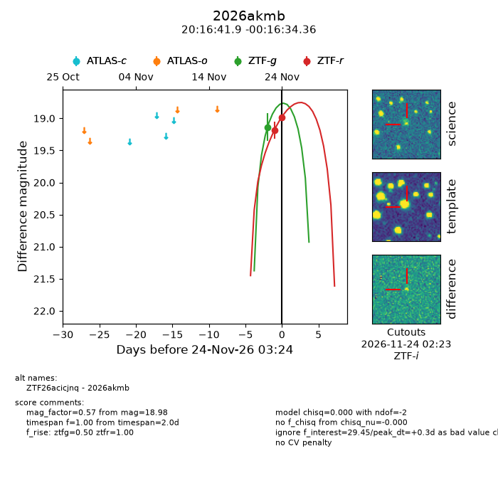
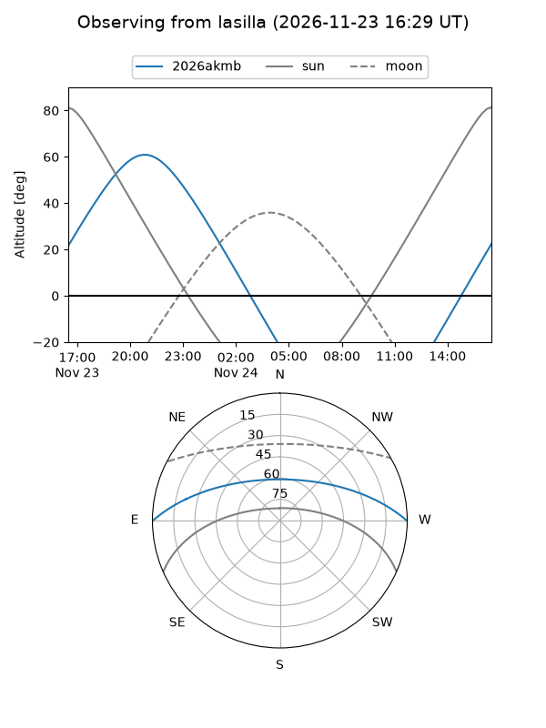
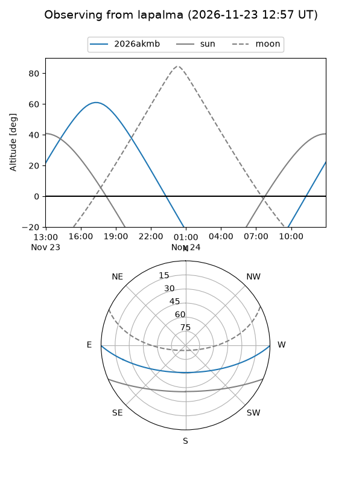
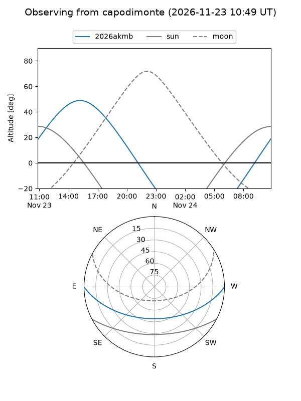
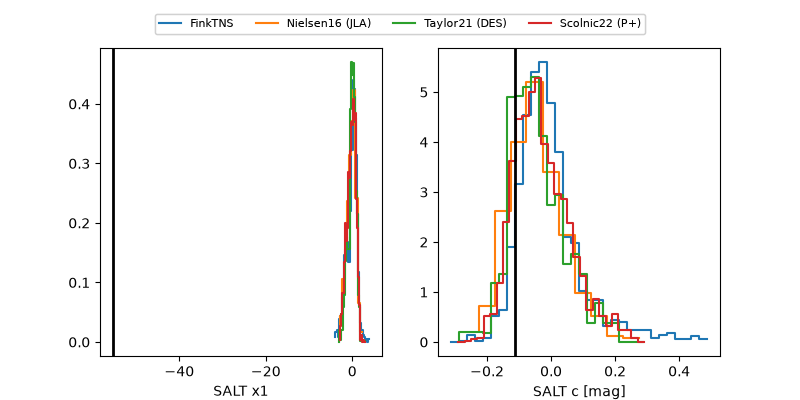

2026akmb
Target 2026akmb at 2026-11-24 03:25
Aliases and brokers:
FINK-ZTF: ztf.fink-portal.org/ZTF26acicjnq
Lasair-ZTF: lasair-ztf.lsst.ac.uk/objects/ZTF26acicjnq
ALeRCE-ZTF: alerce.online/object/ZTF26acicjnq
YSE-PZ: ziggy.ucolick.org/yse/transient_detail/2026akmb
TNS name: wis-tns.org/object/2026akmb
Direct TNS query: direct search
alt names
ZTF26acicjnq (ztf,fink_ztf)
2026akmb (tns,yse)
Coordinates:
equatorial (ra, dec) = 304.1747,-0.27621
equatorial (HMS+DMS) = 20:16:41.92,-00:16:34.36
galactic (l, b) = (42.7644,-19.00820)
Flags:
peak dt: +0.3
Photometry:
last ztfg=19.14, ztfr=18.98
1 ztfg, 2 ztfr detections
Lightcurve

Visibility



Additional plots
